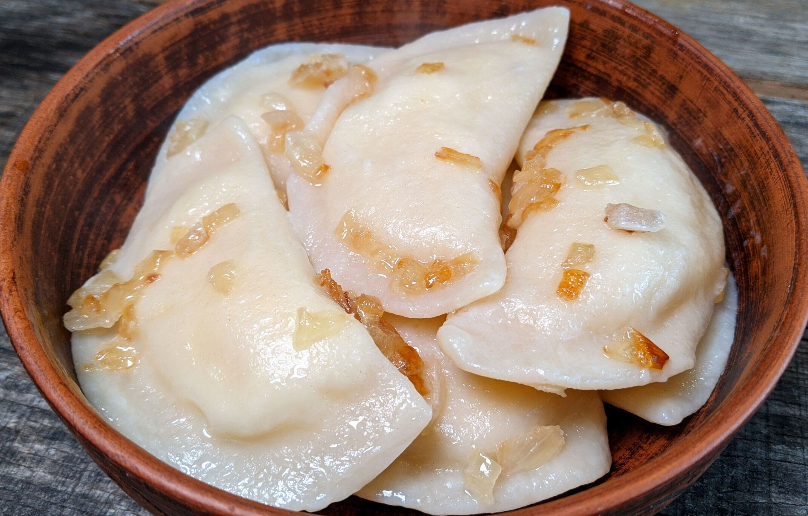

Varenyku

Description
Varenyky are a beloved traditional Ukrainian dish made of soft dumplings filled with various ingredients, such as potatoes, cheese, meat, or fruits.
They are comforting, versatile, and often served with sour cream and butter. Varenyky are a symbol of Ukrainian hospitality and culinary heritage, enjoyed in households and festive gatherings alike.
Ingredients
For the Dough:
- 2 cups (250 g) all-purpose flour
- 1/2 tsp salt
- 1 large egg
- 1/2 cup (120 ml) water (warm)
- 1 tbsp vegetable oil (optional, for extra elasticity)
For the Filling (Potato and Cheese Version):
- 3 large potatoes (about 500 g), peeled and cubed
- 1/2 cup (120 g) farmer’s cheese or ricotta
- 1 medium onion, finely chopped
- 2 tbsp butter (for sautéing onions)
- Salt and pepper to taste
For Serving:
- 2 tbsp butter (melted)
- 1/2 cup sour cream
- Fresh dill (optional, finely chopped)
Steps to Make Varenyky
1. Prepare the Dough:
- In a large bowl, combine the flour and salt.
- Make a well in the center and add the egg. Gradually mix in the warm water, kneading until the dough comes together.
- Knead on a floured surface for about 8–10 minutes until the dough is smooth and elastic. Cover with a kitchen towel and let it rest for 30 minutes.
2. Prepare the Filling:
- Boil the potatoes in salted water until soft (about 15 minutes). Drain and mash until smooth.
- In a skillet, melt butter and sauté the onions until golden. Add to the mashed potatoes.
- Stir in the cheese, season with salt and pepper, and let the mixture cool.
3. Assemble the Varenyky:
- Roll out the dough on a floured surface to about 1/8-inch (3 mm) thickness.
- Use a round cutter or glass (2–3 inches in diameter) to cut out circles.
- Place 1 tsp of filling in the center of each circle. Fold the dough over to form a half-moon shape and press the edges together, sealing tightly. You can crimp the edges for decoration.
4. Cook the Varenyky:
- Bring a large pot of salted water to a boil.
- Carefully drop the varenyky in batches into the boiling water. Stir gently to prevent sticking.
- Cook until they float to the surface, plus an additional 2–3 minutes. Remove with a slotted spoon.
5. Serve:
- Place the cooked varenyky in a serving dish and drizzle with melted butter to prevent sticking.
- Serve warm with a dollop of sour cream and garnish with fresh dill, if desired.
Home